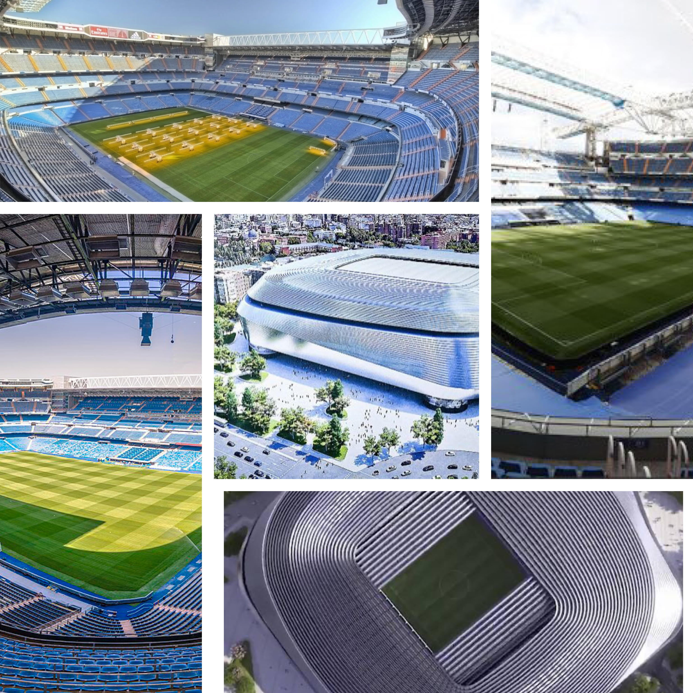
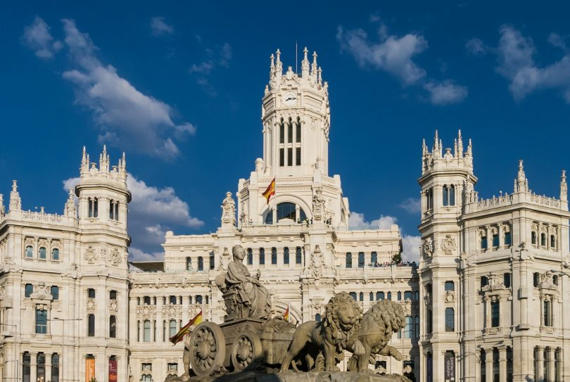

Madrid, joyeuse et animée 24 h/24, a la réputation d'être une ville ouverte où se mêlent des gens de tout type et d’origine diverse. Outre ses célèbres musées, ses avenues animées bordées de magasins en tout genre, ses restaurants de cuisine du monde et sa vie nocturne légendaire, Madrid surprend avec ses petits recoins historiques débordants de charme.
Santiago-Bernabéu : un stade pas comme les autres

Le stade Santiago Bernabéu est un stade de football situé à Madrid.Le Tour du Bernabéu vous propulse dans l'un des lieux sportifs les plus emblématiques de Madrid et vous permet de découvrir la magnifique histoire du club le plus titré du monde et de vivre au plus près la transformation historique du Santiago Bernabéu.

L'Ayuntamiento de Madrid
L’Ayuntamiento de Madrid, connu en français comme la mairie ou l’hôtel de ville, est l’épicentre du fonctionnement politique et opérationnel de la grande ville qu’est Madrid.Qui ne voudrait pas avoir une photo devant ce magnifique chef-d'oeuvre ?
